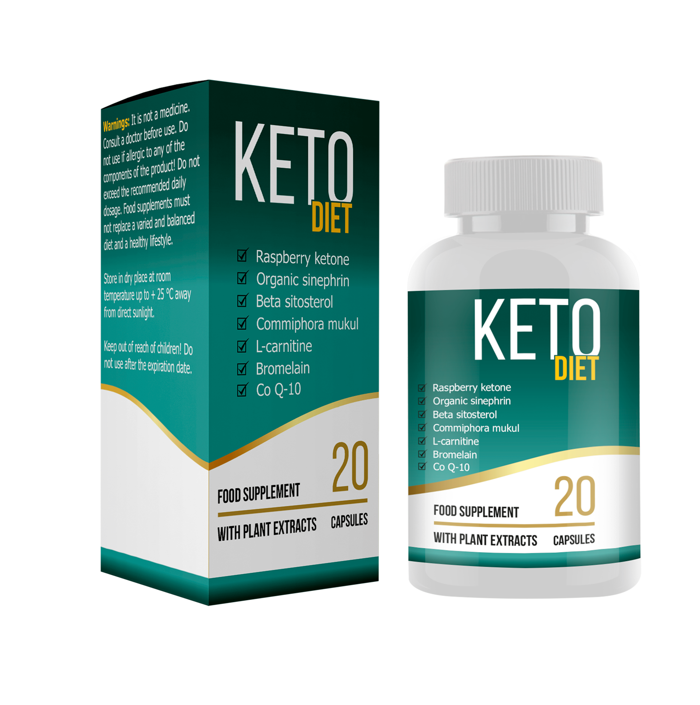
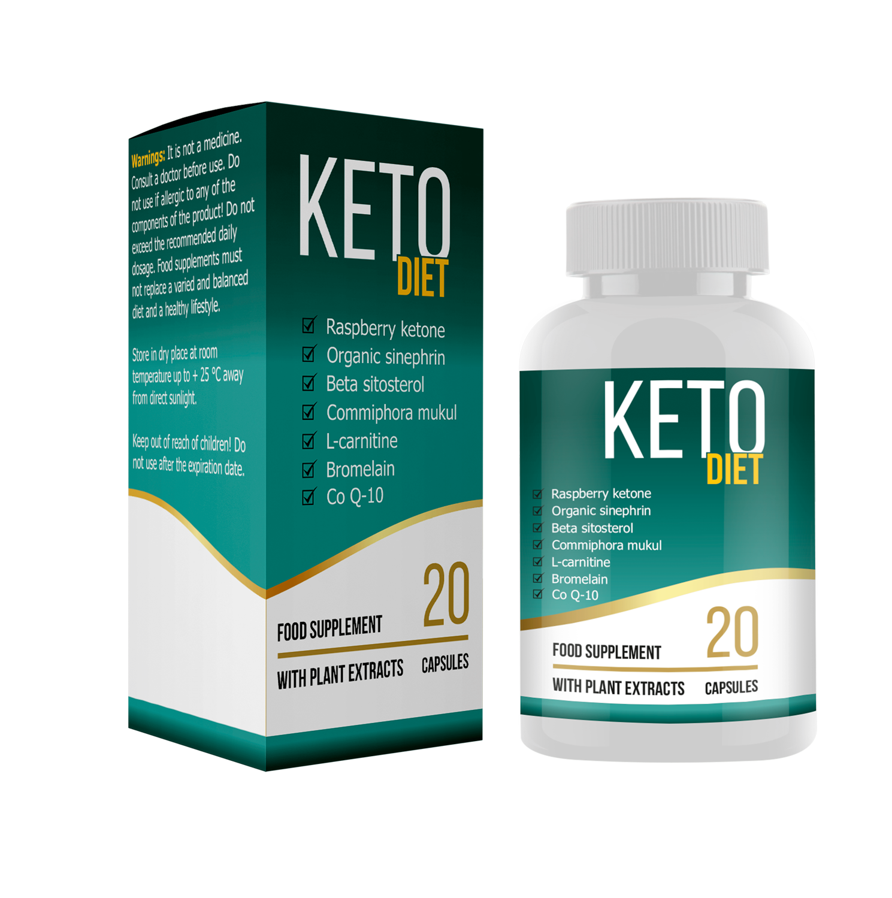

Dieta ketogenică
- alimentație cu un conținut scăzut de glucide, bogată în grăsimi și conținut moderat de carbohidrați. Te ajută să slăbești datorită transformării grăsimii proprii în energie.
Avantajul dietelor ketogenice este că puteți mânca multe alimente gustoase, cum ar fi carne, pește, ouă, brânză - tot ce conține multă grăsime. Însă, e necesar să excludeți complet glucidele. Dar acest lucru provoacă consecințe grave:

lipsa
de energie-
dezvoltarea
”gripei-keto” -
proasta funcționare
a organelor interne
Iată de ce
aveți nevoie de Keto Diet!
Cu el nu trebuie să renunțați complet la glucide și să vă faceți griji pentru starea organismului.
Keto Diet -
consumi produsele
preferate și slăbește!
Componenții săi activi reduc oboseala , apatia, previn ”gripa-keto” și suplinesc deficitul de substanțe benefice.
Atunci când iei Keto Diet poți consuma produse cu un conținut sporit de glucide, , important e să nu abuzați. Formula activă din compoziția produsului intensifică de 2-3 ori procesul de ardere a grăsimilor, fără consecințe pentru organism.
Cum funcționează?
- Când organismul nu mai primește carbohidrați în cantitatea necesară, pierde energie și intră în starea de cetoză .
- Pentru suplinirea rezervei de energie începe arderea activă a grăsimii proprii.
- Surplusul de kilograme dispare doar datorită pierderii de grăsimi - masa musculară este păstrată.
-

Consumul de glucide scade
-

Cetonele se transformă în energie pentru creier
-

Nivelul glucozei din sânge scade
-

Grăsimea se transformă în cetone
-

Organismul începe să ardă grăsimea proprie
Dacă ții dieta ketogenică, cetoza apare în a doua sau a treia săptămână. Iar dacă iei
simultan Keto Diet , procesul se declanșează deja
peste 40-50 minute! Numărul corpilor cetonici crește chiar și cu prezența glucidelor în organism.
Efectele secundare provocate de dietă se reduc la minimum.

-
Dieta ketogenică
Perioada în care slăbești: 3-6 luni
Restricţii: excluderea glucidelor, consumul moderat de proteine
Efecte secundare: acidoza (dureri de cap, somnolență, slăbiciune); nefrolitiază (pietre la rinichi), demineralizare osoasă, probleme cu tractul gastrointestinal, hipoglicemie temporară, deshidratare
Rezultat: -5-7 kg/lună
Mod de utilizare: pastila se dizolvă într-un pahar de apă curată la temperatura camerei și se ia o dată pe zi timp de 30 de zile la micul dejun.
Keto Diet va schimba concepția ta despre slăbit
-
Rezultat fără prea mult efort Componentele active acționează pe tot parcursul zilei: în timp ce lucrați, vă odihniți sau chiar dormiți. Ele intensifică metabolismul și declanșează procesul de ardere a grăsimilor fără exerciții fizice.

Fără efecte secundare Datorită componentelor naturale, Keto Diet nu afectează negativ inima, vasele sanguine și ficatul. Reduce la minimum reacțiile alergice.

Fără arderea masei musculare Componentele Keto Diet descompun grăsimile subcutanate și contribuie la păstrarea masei musculare. Acestea împiedică reducerea electroliților din sânge, fapt ce determină slăbirea sănătoasă.
e simplu!
Slăbitul cu ajutorul Keto Diet - reabilitarea întregului organism
Keto Diet saturează organismul cu toate substanțele necesare și microelementele în timpul pierderii active în greutate. Aceasta îți permite să eviți dezvoltarea avitaminozelor, și deshidratare, care se produce adesea când ții o dietă strictă.
Componentele active
Întrebări frecvente:
-
Sunt posibile efectele secundare după administrarea Keto Diet?
Reacțiile alergice se pot datora numai intoleranței individuale la componentele produsului.
-
În timpul dietei ketogenice se interzice consumul de dulciuri și făinoase.
Iar împreună cu Keto Diet e posibil?În cantități mici este posibil. Keto Diet ajută la eliminarea carbohidraților rapizi din organism, până când n-au fost asimilați.
-
De unde putem cumpăra Keto Diet?
Keto Diet este vândut doar aici, pe site-ul oficial al producătorului. Aceasta reduce numărul produselor falsificate.
-
Peste cât timp începi să slăbești cu Keto Diet?
În dependență de organism și stilul de viață. În medie- 1 lună.
-
Keto Diet a trecut toate studiile clinice necesare?
Keto Diet a fost testat și aprobat de cei mai renumiți nutriționiști din Europa. A primit mai multe certificate de calitate și a fost premiat la conferința anuală de nutriție și imunologie.
-
Keto Diet poate fi administrat cu toate produsele?
Da, Keto Diet poate fi administrat fără a schimba preferințele culinare.
-
După finisarea cursului cu Keto Diet greutatea se menține?
Da, greutatea rămâne aceeași pentru o lungă perioadă de timp.
-
De ce Keto Diet nu este vândut în farmacii și magazine?
În acest mod, producătorul se apără de produse contrafăcute și comunică direct cu cumpărătorii săi.
-
Keto Diet poate fi folosit pentru reabilitarea organismului?
Da, Keto Diet ameliorează funcțiile organelor interne, curăță organismul și îl umple cu vitamine. Majoritatea continuă să ia Keto Diet chiar și după finisarea dietei, în scop de reabilitare pentru organism.
-
Keto Diet are produse analogice?
La acest moment, nu există produse analogice Keto Diet. Acesta este un remediu natural unic, ce acționează sigur și eficient.
Nu mai sta la dubii! A venit timpul să slăbești!
Keto Diet + dieta ketogenică —
cea mai rapidă și
eficientă metodă să slăbești

Plasarea comenzii